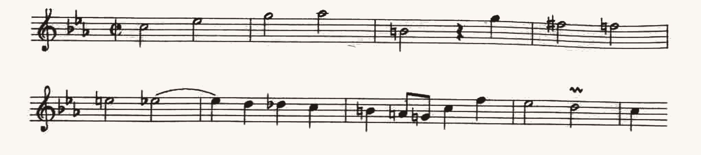
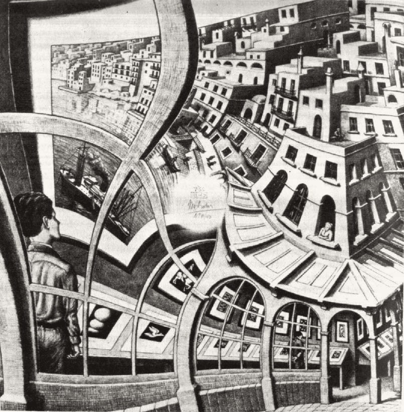

In 1979, Douglas Hofstadter introduced readers to a woman named Aunt Hillary. She was intelligent, witty, sensitive, and capable of delightful conversation. She also happened to be an ant colony.
Not a particularly intelligent ant colony. Every individual ant was as mindless as any other. None understood language, possessed a personality, or had the slightest idea what Aunt Hillary was thinking. Yet through the coordinated activity of millions of these tiny creatures, something extraordinary emerged: a coherent mind with a sense of self.
Aunt Hillary was fictional, of course—a character in Hofstadter's Pulitzer Prize–winning Gödel, Escher, Bach: An Eternal Golden Braid. But nearly half a century later, we have built something that makes her seem less like an intellectual fantasy and more like a question we can no longer avoid.
Today's most advanced artificial intelligence systems can reason through unfamiliar problems, write sophisticated software, compose music, and engage in conversations that would have seemed miraculous just a few years ago. They can discuss their apparent motivations, explain their mistakes, and sometimes describe their own internal processes.
And yet we have no settled answer to a surprisingly simple question: Is there anybody home?
We know what these systems do. We increasingly understand how they do some of it. What we do not know is whether the intelligence appearing on our screens is accompanied by anything resembling an inner life.
This is why Gödel, Escher, Bach may be the most important book to revisit in the age of AI. Not because Hofstadter accurately predicted our technological future. In several remarkable ways, he did not.
Its importance lies somewhere deeper: Hofstadter understood how intelligence and selfhood might emerge from mindless matter. What he did not foresee was how far machines might travel toward the former without clearly acquiring the latter.
That distinction may become one of the defining philosophical and ethical questions of our century (previous post: Is AI Conscious? And Does It Really Matter?).
The Strange Loop: How Something Comes From Nothing
You are made of atoms. None of those atoms is conscious.
Your neurons are physical cells governed by electrochemical processes. No individual neuron understands Shakespeare, feels nostalgic about childhood, or wonders whether life has meaning.
Yet somehow, when billions of these cells operate together, there is you: a person who remembers yesterday, imagines tomorrow, recognizes themselves in a mirror, and can think about the very process of thinking.
How does a self emerge from things that have no selves?
This is the mystery around which Hofstadter constructed his extraordinary book. Rather than begin with neuroscience, he approached the problem through three seemingly unrelated figures: Johann Sebastian Bach, M. C. Escher, and Kurt Gödel.
Their works, Hofstadter argued, revealed a common underlying structure: the Strange Loop.
Consider Bach's Musical Offering, composed in 1747 after a visit to Frederick the Great. One piece, the Canon per Tonos, begins in C minor and gradually modulates upward. Just when the music appears ready to conclude, it has reached D minor, from which it can begin its journey again.
Repeat the process six times and something peculiar happens. The canon has climbed through an entire octave, only to arrive back in C minor.
It has returned to its starting point, but one level higher. Hofstadter calls it the Endlessly Rising Canon.

Figure 1. The Royal Theme that Frederick the Great gave Bach in 1747. The endlessly rising Canon per Tonos grows out of it. (From Gödel, Escher, Bach, Fig. 3)
Escher accomplished a similar trick visually. In Ascending and Descending, figures march endlessly along an impossible staircase. In Drawing Hands, two hands appear to sketch each other into existence. The distinction between creator and creation folds back upon itself.

Figure 2. M. C. Escher, Ascending and Descending (1960). Hofstadter's "loosest" strange loop: monks climb forever, yet keep returning to where they started. (Gödel, Escher, Bach, Fig. 6)

Figure 3. M. C. Escher, Drawing Hands (1948). "A two-step Strange Loop," in Hofstadter's words: creator and creation draw each other into being. (From Gödel, Escher, Bach, Fig. 135)
And in 1931, Gödel achieved something even more startling in mathematics. By developing a way for arithmetic to encode statements about its own proofs, he constructed a proposition that effectively asserted its own unprovability. He showed that a sufficiently powerful, consistent formal system cannot prove every arithmetic truth expressible within it.
A mathematical system had learned, in a precise technical sense, to refer to itself—and that self-reference exposed a fundamental limitation.
What unites these examples is not mere repetition. Ordinary loops return to where they began. Strange loops cross levels that we normally imagine to be separate, until the higher level unexpectedly reaches back into the lower one.
The drawing creates the hand that creates the drawing. A formal system makes statements about the provability of its own statements. A brain builds a representation of the world, places a representation of itself inside that world, and then allows that representation to influence its own behavior.
For Hofstadter, this last kind of loop may be the secret of consciousness.
The self is not a little person sitting inside the skull, watching a screen of sensory information. It is a sophisticated, self-referential pattern: a system that has become complex enough to construct a model of itself and allow that model to participate in the processes that sustain it.
The extraordinary suggestion is that no mysterious ingredient needs to be added to matter for an "I" to emerge. Under the right organization, the pattern itself may become the self.
And if that is true, nothing in principle requires the underlying material to be biological.
The question becomes one of architecture rather than chemistry.
Aunt Hillary and the Great Next-Token Misunderstanding
In Hofstadter's dialogue Ant Fugue, Achilles—the curious straight man of the book's philosophical skits—cannot imagine talking to an ant colony. The Anteater explains that colonies converse "in writing" via coded trails; he scratches a message in the dirt and watches their reply form, trying to guess what comes next. Unintentionally, Hofstadter sketched a chat with a language model.
At the bottom, ants simply wander and follow chemical cues. Higher up, they form coordinated clusters and recurring patterns large enough to represent concepts and support thought. Watch individual ants and you see insects; read the organization and you meet Aunt Hillary.

Figure 4. M. C. Escher, "Ant Fugue" (1953). (GEB, Fig. 61)

Figure 5. Hofstadter's MU-picture: "MU" from afar, "HOLISM" and "REDUCTIONISM" up close. Meaning depends on the level you read. (GEB, Fig. 60)
That is Hofstadter's lesson about levels of description. Molecular collisions can't explain a hurricane's eye; vibrating air molecules can't explain why a symphony moves us. Minds likewise require concepts absent at the level of their parts.
Which answers the commonest dismissal of language models: that they are "just predicting the next token" (roughly, the next word or word fragment). True as a training objective, that confuses a simple objective with simple machinery—like calling evolution "just survival of the fittest." Predicting human text well forces internal representations of concepts, grammar, and plans. Calling it "just next-token prediction" is Achilles staring at the ants.
The Difference Between Self-Reference and a Self
Hofstadter's argument is often boiled down to a slogan: consciousness is self-reference. But a video camera pointed at its own monitor is self-referential, and a chatbot can spend pages discussing its own existence. Neither demonstrates consciousness.
Hofstadter's strange loop is richer than feedback. It is a tangled hierarchy, in which the system's model of itself, its self-symbol, reshapes the processes that produce it. Our beliefs about our preferences change them; our model of ourselves keeps taking part in making the person being modeled. Beneath this Tangled Level lies an Inviolate Level, the machinery whose rules stay in force no matter what happens above.

Figure 6. Feedback versus a strange loop. On the left, output returns as input on a single level. On the right, a self-symbol on the Tangled Level reaches down to reshape the system that produces it, while the Inviolate Level beneath keeps its rules. Where today's models fall is an open question.
A language model in conversation runs on fixed weights, its Inviolate Level, while its growing context feeds each word back into the next pass. That is genuine feedback. Yet between sessions the weights stay frozen, and without scaffolding each conversation starts blank—far from a self-model continuously reshaped by lived experience. No established test tells us which of these gaps matters for consciousness, but the distinction gives us a far better question than whether a chatbot can say "I":
Does the system merely generate statements about an "I," or does it maintain an integrated self-model that genuinely shapes what it does?
That is the difference between describing a strange loop and, possibly, being one.
The Blank Center
One image in Gödel, Escher, Bach captures this predicament best: M. C. Escher's 1956 lithograph Print Gallery.
A young man stands in a gallery viewing a print of a harbor town whose buildings twist outward until they contain the gallery itself. He is inside the gallery, inside the town, inside the print, inside his mind—"the tightest of all Strange Loops." At the spiral's center sits a stark white patch bearing Escher's monogram.

Figure 7. M. C. Escher, Print Gallery (1956), with Escher's monogram in the blank center. (GEB, Fig. 142)
Hofstadter read that hole as a pictorial Gödelian necessity Escher couldn't fill without breaking his rules—visible to us outside, invisible to the viewer inside.
Then, in 2003, mathematicians Bart de Smit and Hendrik Lenstra solved Escher's geometry and filled the hole: inside sits a smaller, rotated copy of the entire print, spiraling inward forever. The blank wasn't forced by contradiction, but by infinite self-similarity—impossible by hand, describable by math. With better instruments, an impassable gap can reveal structure.
For us, that blank center pictures machine minds. We trace tokens, activations, features, plans, and self-descriptions—until we look for an experiencing subject and hit the white patch. Its emptiness doesn't prove no one is there; the complexity swirling around it doesn't prove someone is. It marks the edge of what we know, and Print Gallery reminds us such edges move.
Hofstadter showed how an "I" might arise in a world with no fundamental "I" particles. Modern AI has shown how many behaviors of an "I" can appear without settling whether an "I" comes with them. Those discoveries do not contradict each other—they are two voices in the same fugue.
Aunt Hillary's friends never had to ask whether anybody was home. We do. But the deepest lesson of Gödel, Escher, Bach is that the question is not beyond reach: a self, if there is one, is a pattern of levels and loops, and patterns can be studied. The right stance is neither to assume that the center of the loop is occupied nor to insist that it must stay blank forever, but to keep tracing the spiral inward until we understand what kind of thing could be there.
Appendix: Illustration credits
Figures 1, 3, 4, 5, and 7 are reproduced from Douglas R. Hofstadter, Gödel, Escher, Bach: An Eternal Golden Braid (1979), and include works by J. S. Bach, M. C. Escher, and Hofstadter. Figure 2, Escher's Ascending and Descending (GEB, Fig. 6), is taken from a printed reproduction of the lithograph. The opening image is an original editorial illustration. Figure 6 is an original diagram made for this essay.
Comments